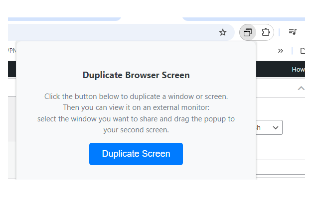
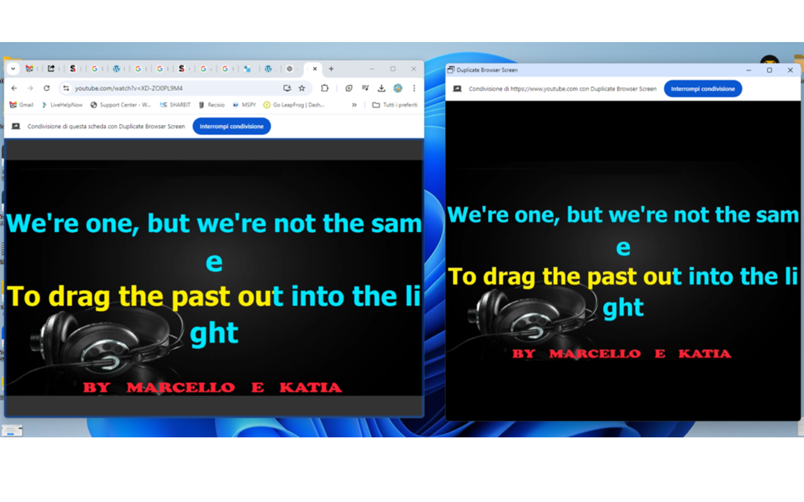

Duplicate Browser Screen
Ever found yourself needing to mirror a Chrome tab onto another screen maybe for a presentation, a karaoke session, or just to look extra productive with double screens Duplicate Browser Screen is your new favorite Chrome extension. With just one click, this tool lets you clone any browser tab and toss it over to a second monitor. No tech wizardry needed.
Whether you're a teacher showing slides on a projector, a Twitch streamer keeping tabs on chat, or someone who likes to watch YouTube on one screen while browsing Reddit on the other (we see you), this extension makes it ridiculously easy. It's super lightweight, doesn't require any setup, and works like magic. You dont have to install extra apps or go through awkward screen sharing tools. Just install, click, and go.
Bonus points It remembers your preferred layout and opens the duplicate window exactly how you want it. You can even set up multiple duplicates and feel like a tech overlord. All without touching your browser's dev tools or manually dragging stuff around.
📄How to Use
- Install the extension from the Chrome Web Store.
- Open the tab you want to duplicate.
- Click on the Duplicate Browser Screen icon in your Chrome toolbar.
- Watch as a new window appears with the same content ready to drag to another screen.
- High five yourself for being efficient
📷 Screenshots


✅ Features
- Duplicate any tab in one click
- Send clones to second screen instantly
- Ideal for presentations, streaming, and multitasking
- No configuration or settings required
- Lightweight and fast no performance impact
- Works with any type of content: videos, web apps, docs, slides
Pro tip: You can also use this with extensions like Auto Clicker or Status Saver for a full dual-monitor automation workflow.
View on Chrome Web Store